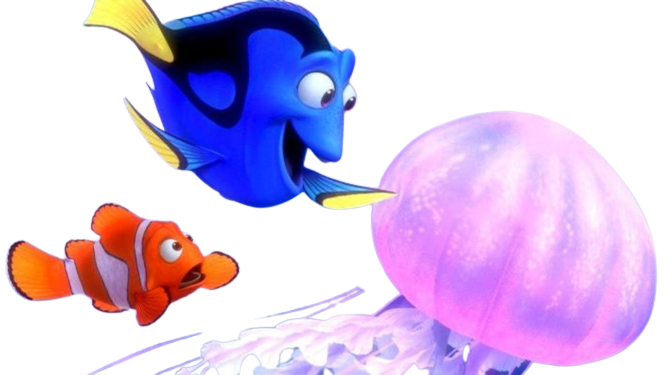

Porém, nem toda estrada é fácil de ser percorrida...
Ao continuar nadando, vocês acabaram de dar de frente com uma enorme de rede de águas vivas...
O medo é o sentimento que prevalece, mas nada de desistir nesse momento.
Chegou a hora de escolher entre:
(1) Refazer rotas e planos.
(2) Enfrentar as águas vivas.